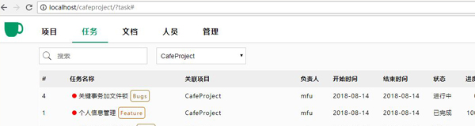

年初，我从工作到第9个年头的北京来到了一个准一线城市。各方面都非常不适应，今天先来说说工作吧。我是项目经理。然而这个职位在这里的很多公司中也变成了销售，每个月也是要背业绩的，这一点我相当不理解……
年初，我从工作到第9个年头的北京来到了一个准一线城市。各方面都非常不适应，今天先来说说工作吧。我是项目经理。然而这个职位在这里的很多公司中也变成了销售，每个月也是要背业绩的，这一点我相当不理解……我的第一款小程序上线了。从决定做到最终上线一共用了16天。在制作的过程中，技术上没有遇到什么问题，小程序的官方API文档做得相当棒，学习起来没有一点难度。反倒是在策划和UI设计上耽误了不少时间。
随着今天下午“文档”模块的完成，CafeProject的主要功能模块就全部写完了。和之前策划的有很大不同，扔掉了“游客”模块（就我一个人用还要啥游客模块），对细节做了重新规划。新完成的文档模块如图：
开发的第11天，最重要的项目和任务模块完成了，其中对个人设置那里大改了一次。现在的功能和界面设计，反正我是觉得可以拿出来见人了。目标是让绝大多数人看着都觉得“还行”，就很不容易了。放两张截图：
Next
微信订阅
部分文章会同步到我的微信订阅号中，欢迎关注

©Faluo 2018